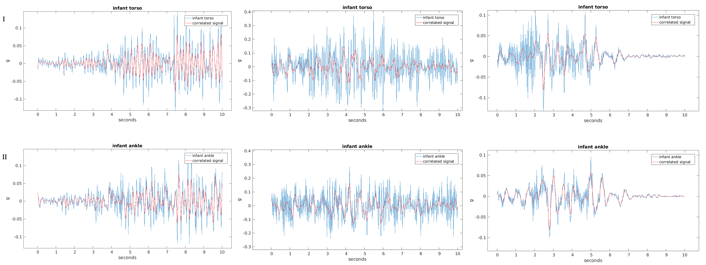
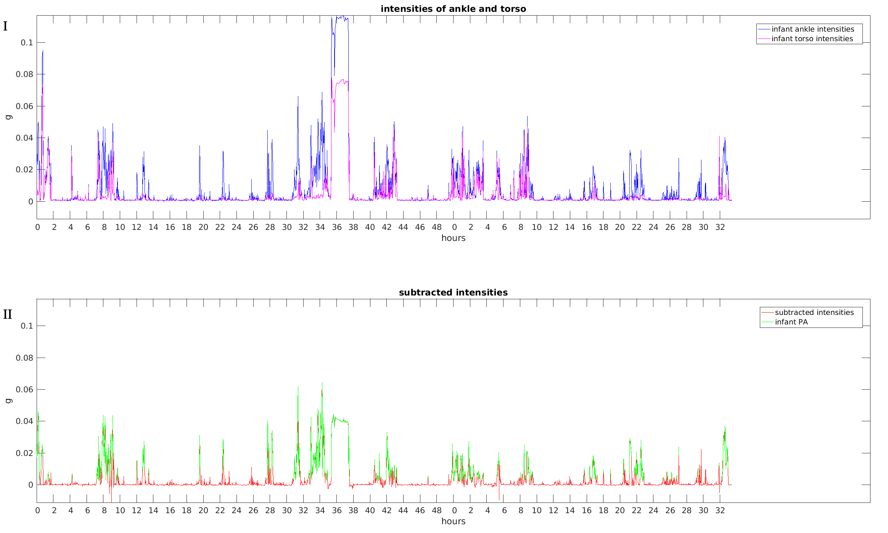

Abstract
The main goal of the project is to extract physical activity levels from tri-axial accelerometer
data, taken of 4 month old infants. Infants wore two accelerometers, one on the torso, other
on the ankle, for 48 hours in a free living environment. In order to properly extract physical
activity, the accelerometer data has to be prepared and preprocessed. Preparation includes data
organization and timestamp alignment, while the preprocessing includes filtering, averaging,
removal of data where the accelerometer was not worn, summary measure extraction, correction
for gravity component and correction for acceleration contributed by the infants caretaker.
Several approaches are discussed and presented along with the problems and negative features
of each. The results from the correction of accelerations due to infant being moved are compared
against the diary notations of infants sleeping and feeding habits, kept by their mothers. In the
end, physical activity levels are extracted and analyzed along with other variables.


The tri-axial accelerometer data was obtained in the Energy balance and health in pregnancy
project, a pre-pilot project for the LifeGene Study (http://www.lifegene.se). One of the aims
of the pre-pilot project was to assess the feasibility of estimating physical activity(PA
hereafter) in young infants in order to associate lifestyle behaviors during pregnancy and
post-partum markers of cardiometabolic health in the infant. An extensive collection of
characteristics was measured and obtained, including infants and mothers tri-axial
accelerometer data and infants sleeping and feeding diaries. The accelerometer data was
recorded in a free living environment for 48 hours using a GENEA monitor(UniLever Ltd),
sampled at 40 Hz and stored in g units. The diary consist of printed forms which the
mothers filled out for 5 consecutive days from midnight of the second day on, example in
Supplements.
In this project, the focus was on the estimation of infants PA along with the discussion and
assessment of the feasibility regarding such an estimation.
Although accelerometers are increasingly being used for PA estimations in population
studies, their output needs to be interpreted with caution. Due to its properties and
sensitivity, the accelerometer is prone to pick up accelerations not related to the PA of the
subject wearing it. In measurements taken of adults, these are mainly due to gravitation and
instrumentation noise, but in infants and smaller children who are less or not mobile in
terms of walking, the caretaker attributes greatly to the acceleration by carrying or
placing the child[1]. By not correcting for such contributions, the extracted infants PA
would incorrectly present those infants that are moved around more as being more
active.
For that purpose, the pre-pilot project was designed to place two accelerometers on the
infant, one on the torso, other on the ankle. The idea behind this was that the infant at 4
month old age can not move his torso on his own, so any large accelerations measured on
the torso would consequently mean that the infant was being moved at that time. On the
other hand, the infant can move his legs, so having accelerations detected on the ankle
monitor, but not on the torso, would mean the infant is being active himself. At the same
time, the mothers, who were the main caretakers of the infants, also wore a wrist
accelerometer and kept a diary of feeding and sleeping habits of the infant, as well as other
important information concerning the infant and the experiment. In order to analyze and
process all this information, the tri-axial accelerometer data needed to be prepared and
preprocessed. The first and basic task was to organize the data which is stored in comma
separated files as well as binary files in order to enable same analysis to be performed
for all subjects or mother-infant pairs. Then for each mother-infant pair and the
corresponding set of accelerometers, the measurements needed to be aligned according to
the timestamp, to ensure they represent accelerations recorded at the same time

 point, since the three accelerometers did not start measuring at the exact same
time. This was followed by data preprocessing, which started with removal of
the data points belonging to the time when the accelerometer was not actually
worn. Long durations of non-wear time could impose a low PA value due to the
lack of accelerations in the overall measured time frame. The beginning and end
timestamps of the detected non-wear blocks were validated against the diary notations of
accelerometer removal and reattachment. The next step required a summary measure to be
extracted. For this purpose, the data from each of the three axis was first filtered with a
median filter of width 11, then 1 was subtracted from the Euclidean norm of all three
axis and in the end the measure was averaged over 0.2 second windows, similar
as done in previous analysis[2]. The subtracted 1 represents an estimation of the
gravitational component, since the acceleration output is measured in gs, where 1g
≃
9.81 m/s2. But as analyzed and discussed in previous papers[3], removing the gravitational
component is not so simple, especially when rotational movements are present. In this
project, this problem was approached with the signal baseline correction method[4], which
preserves all the amplitudes, but corrects the signal baseline drifts or displacements.
The final step of preprocessing was to correct for the accelerations contributed by
the caretaker. Besides one published paper[1] and a PhD thesis[6] along with a
conference abstract[5], this issue has not yet been researched and therefor has no
established approach of solving. For this reason, various approaches were tested in
this project. From simple subtraction of accelerations measured at torso from the
accelerations measured on the ankle, to still simple but more advanced approaches like
subtracting the windowed intensities or using the windowed intensities to reduce the
acceleration values in the ankle measurement, to more complicated attempts of correction
by extracting windowed signal similarities between the measurements of torso
and ankle, along with the approach where all the blocks detected as infant being
moved are simply excluded from the further analysis and PA extraction. Each
approach has its problems and negative features which expose the nature of the
accelerometer output taken of an infant from monitors placed on different body
parts. Blocks, where infant was being moved, were approximated along with a
set of variables, representing the overall duration, intensity and frequency of the
caretakers contributions. These variables were used to analyze the results from different
approaches and could as well be used as covariates in the future analysis of PA and the
correlation with other characteristics. The results were also compared with the
diary notations of sleeping and feeding habits with an intention of validation.
point, since the three accelerometers did not start measuring at the exact same
time. This was followed by data preprocessing, which started with removal of
the data points belonging to the time when the accelerometer was not actually
worn. Long durations of non-wear time could impose a low PA value due to the
lack of accelerations in the overall measured time frame. The beginning and end
timestamps of the detected non-wear blocks were validated against the diary notations of
accelerometer removal and reattachment. The next step required a summary measure to be
extracted. For this purpose, the data from each of the three axis was first filtered with a
median filter of width 11, then 1 was subtracted from the Euclidean norm of all three
axis and in the end the measure was averaged over 0.2 second windows, similar
as done in previous analysis[2]. The subtracted 1 represents an estimation of the
gravitational component, since the acceleration output is measured in gs, where 1g
≃
9.81 m/s2. But as analyzed and discussed in previous papers[3], removing the gravitational
component is not so simple, especially when rotational movements are present. In this
project, this problem was approached with the signal baseline correction method[4], which
preserves all the amplitudes, but corrects the signal baseline drifts or displacements.
The final step of preprocessing was to correct for the accelerations contributed by
the caretaker. Besides one published paper[1] and a PhD thesis[6] along with a
conference abstract[5], this issue has not yet been researched and therefor has no
established approach of solving. For this reason, various approaches were tested in
this project. From simple subtraction of accelerations measured at torso from the
accelerations measured on the ankle, to still simple but more advanced approaches like
subtracting the windowed intensities or using the windowed intensities to reduce the
acceleration values in the ankle measurement, to more complicated attempts of correction
by extracting windowed signal similarities between the measurements of torso
and ankle, along with the approach where all the blocks detected as infant being
moved are simply excluded from the further analysis and PA extraction. Each
approach has its problems and negative features which expose the nature of the
accelerometer output taken of an infant from monitors placed on different body
parts. Blocks, where infant was being moved, were approximated along with a
set of variables, representing the overall duration, intensity and frequency of the
caretakers contributions. These variables were used to analyze the results from different
approaches and could as well be used as covariates in the future analysis of PA and the
correlation with other characteristics. The results were also compared with the
diary notations of sleeping and feeding habits with an intention of validation.
From the remaining or corrected measurements, the PA was extracted and again compared
against the diary notations of sleeping habits, with the intention to examine the
overall activity, specifically whether it is present more during infants awake time as
expected. The project report ends with a discussion and conclusions regarding
estimations of infants PA and the feasibility of estimating infants PA by placing

 two accelerometers on the infant in order to correct for the contributions of the
caretaker.
two accelerometers on the infant in order to correct for the contributions of the
caretaker.
When conducting analysis over a complex dataset, where the subjects are in fact two or more paired individuals or a combination of their measures that require preprocessing, the dataset has to be organized in order to enable same preprocessing scripts to be run for each pair representing the individual subject of the analysis. Usually that simply means that the files containing the data need to be named appropriately, by containing a number corresponding to the ordered sequence of numbers representing the set of subjects. When the data to be processed is a time series, very often the exact absolute time is important, especially when comparing measurements of the same characteristic, but from different monitors. For that purpose measurements usually include corresponding timestamps of the absolute time and can therefore be aligned accordingly.
The projects tri-axial accelerometer data is stored in comma separated files as well as binary files, where both types have been named semi-automatically by the accelerometer data acquisition software and the person conducting the experiment, who gave mother-infant pairs their unique id, which had three different endings corresponding to the three accelerometer monitors, the mothers wrist monitor, infants torso monitor and infants ankle monitor. As the file names did not contain any identifier regarding the type of data and could not be ordered to represent the sequence of subjects, symbolic links were created with the help of a list provided by the person conducting the experiment, which contained the full file names with the corresponding label of the data they contain. Mother-infant pairs who had missing one or both infants measurements were excluded from the further analysis. This resulted in 28 mother-infant pairs and 2 infants only, whose corresponding files, containing the three or two measurements, were named n_infant_torso, n_infant_ankle and n_mother, where n...1:30.
The accelerometers were attached upon a visit at a clinic. Besides a few exceptions,
accelerometers were set to start recording before being attached and were attached to the
mothers wrist, infants torso and infants ankle one after the other. This resulted in different
start timestamps. In order to ensure proper analysis, the measurements needed to be aligned
so that for each mother-infant pair, all three measurements had the same start
timestamp.
The alignment was done in a Python script that loaded and read all three files belonging to

 the measurements of each mother-infant pair, processed the data and saved the results. Files
were loaded using the module pandas. The timestamps of the accelerometer were in the
YYYY-MM-DD HH:MM:SS:ffff format and were parsed with the module dateutil which
enables the resulting parsed timestamps to be simply compared with each other. The latest
start timestamp was determined and converted back into the appropriate format with
strftime from the os module. This timestamp was then located in the rest of the measurements
which were truncated up to that index. The resulting three measurements were
aligned according to the absolute timestamp and were saved, again using the module
pandas.
the measurements of each mother-infant pair, processed the data and saved the results. Files
were loaded using the module pandas. The timestamps of the accelerometer were in the
YYYY-MM-DD HH:MM:SS:ffff format and were parsed with the module dateutil which
enables the resulting parsed timestamps to be simply compared with each other. The latest
start timestamp was determined and converted back into the appropriate format with
strftime from the os module. This timestamp was then located in the rest of the measurements
which were truncated up to that index. The resulting three measurements were
aligned according to the absolute timestamp and were saved, again using the module
pandas.
The nature of an accelerometer is that it will pick up any movement of the monitor, regardless whether the movement is due to PA of the subject wearing it or due to the subject being moved or carried, or even due to just readjustment of the monitor. As objects on the surface of earth are always under the influence of gravitation, the accelerometer will also measure acceleration due to gravity, except if it is in free fall. Having such contributions towards the overall acceleration, one has to extract PA with caution as the acceleration signal processing can be impaired and the final result could wrongly reflect subjects PA. Issues also arise from accelerometer non-wear time. Since the final PA variable is the result of the accelerations over the time of experiment, long durations of non-wear time would result in a low PA value in a subject that could have been very active otherwise. Therefore careful accelerometer signal preprocessing is necessary, starting with removal of data where the accelerometer was not worn.
Except for the accelerometer placed on the infants ankle, the accelerometers could had been
removed and reattached. Mothers were asked to note such non-wear time in the diary. Prior
to diary examination, non-wear time was detected automatically with a Pyhton script. The
diary notations were then used for validation of the results. The Python script was
designed based on previous approaches towards non-wear time removal[2]. The
principal idea of the approach is to examine the standard deviation(SD hereafter)
and the span between minimum and maximum of a windowed measurement and
remove those windows, where the SD and span are below a specific threshold. To
increase accuracy, the baseline of the windowed measurement is also examined in
this project. When the accelerometer is not worn by the subject, it should only be
picking up acceleration due to gravitation which is constant. As a consequence, the
measurement of non-wear time should in theory have none or very little SD, the span
between the minimum value and the maximum value should be close to zero and the
baseline of the measurement should be a flat line without any drift or jumps. But
in practice, one can not rely fully on these assumptions. All accelerometers have

 inherent noise, for the accelerometer used in the project, it had been shown that the
SD of a motionless device is 2.6 mg. Other factors can also contribute towards
the increased SD, since being in a free living environment, the accelerometers are
liable to pick up the movement from the environment, even if only the surface
on which it rests is being bumped in to. On the other hand, if the accelerometer
is not placed on the torso, it will not be picking up the accelerations due to the
heartbeat and chest movement from breathing and can therefor appear to be in
non-wear time when the subject is actually just sleeping very still. All this has to
be taken into consideration when extracting and removing the data of non-wear
time and several parameters need to be set whose value have a great effect on the
final outcome. For this reason some parameters were left to be passed on to the
script upon run time in order to enable trial and examination. These parameters
were:
inherent noise, for the accelerometer used in the project, it had been shown that the
SD of a motionless device is 2.6 mg. Other factors can also contribute towards
the increased SD, since being in a free living environment, the accelerometers are
liable to pick up the movement from the environment, even if only the surface
on which it rests is being bumped in to. On the other hand, if the accelerometer
is not placed on the torso, it will not be picking up the accelerations due to the
heartbeat and chest movement from breathing and can therefor appear to be in
non-wear time when the subject is actually just sleeping very still. All this has to
be taken into consideration when extracting and removing the data of non-wear
time and several parameters need to be set whose value have a great effect on the
final outcome. For this reason some parameters were left to be passed on to the
script upon run time in order to enable trial and examination. These parameters
were:
These parameters are read with the module sys. Data is loaded and read with the module
pandas. Each of the axis is filtered with a median filter of width 11, using medfilt from
module scipy.signal. The measurement is windowed with a loop. For each window, SD
and span between minimum and maximum is calculated. If these values are below the
set thresholds, a line is fitted through the accelerometer data points of the window
with the help of polyfit from the module numpy. The slope of the line should be near
to zero. The value of 1e-07 was chosen as the threshold and if the absolute value of
the slope was below that threshold, the window was classified as non-wear time. The
data along with the results were plotted using module matplotlib and printed in the
terminal, example in Figure 1.
Upon trial, examination and previously set cut points, the window length was set to 30
minutes, which corresponds to 72000 data points. Shorter windows were more liable
to classify windows of sleeping into non-wear time, where larger windows failed to
detect short duration non-wear time. SD threshold was set to 0.002 g and minimum
to maximum span threshold was set to 0.015 g. The last parameter left to be specified
upon run time was set to a small amount of data for quick trial and examination
and was later set to full 48 hours. To increase accuracy even further, a more detailed
windowed examination was performed around the edges to better detect the borders

 of the blocks of non-wear time, and up to three windows of in between blocks of
non-wear time were set as non-wear.
of the blocks of non-wear time, and up to three windows of in between blocks of
non-wear time were set as non-wear.
Upon final inspection of the results and their plots, all visually apparent non-wear
blocks were detected, with a few minor blocks that were liable to be sleeping only
blocks, due the time of occurrence. All together 12 out of 30 infants had non-wear
time detected on the torso monitor, with an average of 8.6% of data being removed
with minimum 1.2% and maximum 31.1%. One of the infants had also had the ankle
monitor removed at the end of the 48 hour time period.
The final blocks of non-wear time were removed from all measurements in the case
of infants non-wear time and in mothers only in case of mothers non-wear time. The
start and end timestamps of non-wear blocks were saved to enable validation against
the diaries.
Accelerometers can have a single axis, dual axes or three axes along with different sampling
rates. For the accelerometer used in this project, it had been shown that sampling frequencies
larger than 10 Hz and/or more than one axis did not significantly increase classification
accuracy, when classifying 10-12 semistructured activities performed in the laboratory or an
outdoor environment, while wearing the accelerometer on the right wrist[7]. As for PA
extraction only, same requirements for accuracy should be justifiable, but when
considering detection and extraction of accelerations due to infant being moved, it
might be useful to analyze data in each of the three axes separately. But the case of
this project is, that there is no training data present that could serve as the key
information regarding the way accelerations are detected in the three axis when the
infant is being moved. If such data would be present, one could then model these
accelerations and perhaps having three axes would prove to be useful to better detect
such accelerations in new data. In this project, the accelerations contributed by
the caretaker had to be detected and corrected for just by analysis of the given
data from the two monitors placed on the infant. The way the two monitors were
placed, the three axes of both monitors were not aligned and with the mobility
of the infants ankle they were liable to rotations. This presents a problem when
one wants to compare the two outputs, since each of the axes should be aligned
prior the analysis. For such reasons, a summary measure was extracted, which
represented the output summarized over all three axes along with filtering and
averaging.
The summary extraction was calculated in Matlab as the result of subtracting one from the
averaged Euclidean norm of the three axes which were filtered with a median filter in a
similar way as done in previous analysis[2], since it had been shown, that having more
complicated summaries does not significantly improve the final extraction of PA[3]. The
width of the median filter was 11 and its purpose was to remove any spikes from the
measurement which are due to noise. The resulting Euclidean norm minus one was averaged
over 0.2 seconds to further smooth the data and minimize the contributions of noise. When
plotting the resulting summaries for torso and ankle, one can then better see the substantial
similarities in the measurements due to the caretakers contributions, example in Figure 2.


While the infants torso and ankle summaries show substantial similarity, the
corresponding mothers measurements only exhibits the same pattern of activity absence
during the night, when the accelerations occurrence often overlaps with the infants,
showing the plausible interaction between the mother-infant pair, example in Figure 3.


In the plot of all summaries one can also observe the leftovers of the gravitational accelerations that need further removal, which is discussed in the next subsection.
The separation of the gravitational component becomes more complicated when rotations are present in the measurement[3]. This can result in less accurate further processing, especially when outcomes from different monitors have to be compared. To ensure that the measurement does not reflect the influence of gravitation, the measurement baseline can be corrected to zero. Baseline correction is implemented in Matlab based on a smoothing method with penalized least squares[4]. The method is an extension of the Whittakers method for smoothing, which works by minimizing the following sum:
 å (yi - zi) + lå (zi - 2zi-1 + zi-2) ,
i i
" class="math-display" > å (yi - zi) + lå (zi - 2zi-1 + zi-2) ,
i i
" class="math-display" > | (1) |
where y is the input signal, z is the final smoothed signal and i goes through the data points.
The first part of the sum ensures the best approximation of the input signal, while the
second part represents the penalty for non-smoothness. In practice l is set from
102 £ l £ 109 and its value depends on the input data and the desired final result. Since the
goal of the baseline correction in the project was to keep all the amplitudes intact, but only
correct the rough baseline, l is set to 109.
Reformatting the above into a linear system of equations, we get:
 ¢
(I + lD D )z = y ,
" class="math-display" > ¢
(I + lD D )z = y ,
" class="math-display" > | (2) |
where I is the identity matrix and D is its differential matrix.
The computational time and space can be optimized, using sparse matrices and Cholesky
factorization. The resulted over-smoothed signal represents the baseline and is therefor
subtracted from the measurement. This way, the amplitudes remain intact, but the baseline
drifts and jumps are removed and signal baseline is set to zero, example Figure 4.
The accelerometer is liable to pick up any acceleration caused by the subject moving,
regardless if the subject is in PA or is being moved by another person. Infants at 4 month old
age are completely dependent on the caretaker. Besides the basic tasks like feeding, bathing,
dressing, etc., the infants at 4 months require a substantial amount of carrying, placing and
cradling. This results in significant contributions of accelerations caused by the person caring
for the infant. In 2009 a paper titled Mechanical Measurement of Infant Activity: A
Cautionary Note[1] was published. The main message of the paper was that much of
infants measured activity may be confounded by their caretakers contributions. An
experiment was performed as a basis for the paper, where a mother and her 3 month old
infant had a normal 24 hour day with usual activities, while a researcher with a
motionless doll would mimic everything the mother did with her infant. Both
the infant and the doll wore motion loggers on the chest and ankle. The results
were then analyzed and compared. As one would expect, the dolls measurement
showed a substantial amount of activity which would normally be unusual for a
motionless doll. When comparing infants activity levels to the ones of the doll,
approximately 45% more activity was detected, meaning that the monitor will
pick up both, the infants and caretakers contributions. In 2014 a PhD thesis was
submitted, titled Physical activity in infancy: assessment of an intervention to increase physical
activity in infants[6]. As part of the research, the defended studied and analyzed the
feasibility to assess PA in 6-month old infants using an accelerometer, based on
a validation study performed in 2012, with the results available in a conference
abstract[5]. The goal of the study was to assess the degree of caregiver confounding that
might be expected in these measurements. Similar to before[1], the infants and
motionless dolls wore three accelerometers, one on the wrist, one on the ankle and
one on the waist. While the caretaker would perform several activities with the
infant, the research assistant would mimic their actions with the doll. Overall 34
mother-infant pairs participated, although some did not perform all the activities.
The results showed that when the infant is pushed in a stroller, 29% of the arm
movement and 9% of the leg movement is due to contributing accelerations, while
when being carried, contributing accelerations add up to 23% of the arm movement
and 52% of the leg movement. With another type of activity with a Swiss ball,
28% of the arm movement and 21% of the leg movement was due to contributing
accelerations. For all activities, the waist accelerometer recorded more activity on the doll
rather then the infant, which resulted in an invalid measurement. An interesting
observation showed that the overall output differed significantly between the three
differently placed accelerometers, when in fact recording the same activity. Overall, the
study[5] showed that up to half of the detected activity can be due to contributing
accelerations, while these contributions differ significantly between the activities

 performed and between the differently placed monitors, as well as between the
caretakers.
performed and between the differently placed monitors, as well as between the
caretakers.
The overall variability presents a potential problem as it is currently still unexplained,
making modeling of such data impaired. In the current project, the two monitors were
placed on different body parts of the infant, as well as on the mothers wrist, to enable
correction due to contributing accelerations. But when the two monitors have different
outcomes for the same activity and the variability between the subjects is high, the correction
becomes complicated. This is even further complicated by the fact that a monitor
placed on infants torso is liable to record accelerations that are not due to infant
being moved and are therefor not recorded on the ankle monitor, even though the
infants at 4 month are not able to move their torso. It had been shown that the
movement of the chest while breathing has an amplitude of 10 mg, while heart
beating will result in an amplitude of 80 mg[8]. With such sensitivity, infants crying
and flexing, along with limb movement should also be picked up by the torso
monitor.
Such issues raise doubt that a simple subtraction of the torso placed measurement from the
ankle placed measurement will result in a valid and useful outcome and several more
advanced and complicated approaches were designed and tested for this reason. Total, these
approaches were tested:
Prior all approaches, apparent blocks of infant being moved were detected, based on the substantially increased SD in both, torso and ankle placed measurement. This approximation was used to asses the different results from the different approaches. Blocks of infant being moved were detected similar as in non-wear detection. Example of these blocks noted in both measurements in Figure 5.
Based on these blocks, several variables were calculated. The overall proportion of time
the infant was being moved and frequency of infant being moved, along with eight more

 detailed variables. Detailed variables are proportions of time in combining short and long
duration with low and high intensity blocks along with the frequency. Overall, infants were
being moved by another person on average 35.0% of the time, with minimum at 21.0%,
maximum at 45.4% and SD 5.9%.
detailed variables. Detailed variables are proportions of time in combining short and long
duration with low and high intensity blocks along with the frequency. Overall, infants were
being moved by another person on average 35.0% of the time, with minimum at 21.0%,
maximum at 45.4% and SD 5.9%.
As predicted, A did not give promising results, as the point to point difference was too
significant, even though the measurements were summarized, filtered and averaged and
showed substantial similarities on a large scale. Simple subtraction in fact amplified the
contributing accelerations, as the average SD in the apparent blocks of infant being moved
increased by an average of 15.0% while the average absolute intensity increased by average
20.5%. Example of torso and ankle placed measurements and the result from simple
subtraction in Figure 6. Even when averaging the measurement over 1 second, instead of 0.2,
the average SD still increased by average 14.9% and the average intensity by average 18.3%.


As the measurements exhibit a substantial amount of similarity on a large scale, but seem to be too different point to point, the second and third approaches, B and C use an even more summarized measure and its features, to either do a simple subtraction or a correction. The process is implemented in Matlab. Both, torso placed and ankle placed measurements are windowed in a loop over 1 minute long windows, which corresponds to 2400 points. For each window, the absolute intensity of each monitor is calculated as the sum of absolute values, divided with the window length. In approach B, the torso intensity is simply subtracted from the ankle intensity and the final result is an even further summarized ankle placed measurement with torso intensities subtracted, example in Figure 7.


In the approach C, the ratio between the ankle intensity and torso intensity in each window is used to reduce each point in the ankle measurement in the corresponding widow. For example, if the torso intensity is half the ankle intensity, all the points in the window are reduced for half of their size, example in Figure 8.


In both approaches, the measurement is even further summarized and again the
parameter representing the length of the window influences the final result. Short
windows might preserve the local differences between the two monitors, while
long windows might over summarize the data, especially if used further for PA
extraction. Since training data is not present, such parameters have to be set by trial and
examination, which is time consuming and the quality of the result is subjective.
In approach B, the outcome used for future PA extraction is more summarized then in other
approaches. This could influence the result of the extraction, since PA detection is limited
down to a summary of a minute which makes it less accurate. This is avoided in the
approach C, which in compare to approach A, decreases the average SD and absolute
intensity of the apparent infant being moved blocks by average of 43.9% and 47.3% of the
original SD and original intensities respectively. Although both approaches reduce SD and
absolute intensity they do not completely correct the ankle placed measurement, as left overs
of the contributing accelerations are clearly visible in both cases, while one can also observe
negative intensities due to the fact that the torso placed monitor can obviously also record
more intensive accelerations than the ankle placed one. Since it had been shown that the
same activity performed by the caretaker with the infant is recorded differently by
differently placed monitors, there should be a scaling factor involved when doing such
subtractions or corrections. Obtaining such a scaling factor might be problematic, since it
had also been shown that different activities result in different ratios between the
differently placed monitors, as well as that there is a high variability between the
subjects. Things get even more complicated if considering the fact that the two
monitors will also pick up other accelerations, mainly infants own accelerations
which are unique for that specific body part, like for example accelerations due to
crying, breathing, heart beat or kicking. Without having a well defined training
dataset it is difficult to tell which of the remaining accelerations left after approaches
B and C are due to the excessive detection of contributing accelerations on the
ankle placed monitor or due to infants PA. Nevertheless, the approaches can be
improved. The overall concept of subtracting implies that the torso placed monitor will
record accelerations equal or smaller then the ankle placed one, as well as that the
degree of correction is dependent on the ratio of intensity instead of similarity. If
similarity between the intensities is obtained, it can be used as an approximation
of the true scaling factor needed to accurately correct the ankle placed monitor.
In the approach D, an attempt is made to obtain signal similarities based on the
similarity of windowed intensities, using Pearsons correlation coefficient. The goal of
the approach is to find similar patterns between the two measurements and then
decrease the ankle placed measurement based on the degree of similarity. The
idea behind this is that even though the two differently placed monitors might
record the same activity different, there should be an underlying pattern in both, at

 least on a large enough window scale over the absolute intensities. For example
some windows might exhibit similarity only in the rough changes as in Figure 9,
while others might be more overall similar even on the local scale as in Figure 10.
least on a large enough window scale over the absolute intensities. For example
some windows might exhibit similarity only in the rough changes as in Figure 9,
while others might be more overall similar even on the local scale as in Figure 10.





The main issue with previous approaches A, B and C are the local point to point differences between the two differently placed monitors recording the same activity. These differences are in a form of larger intensities on one of the monitors, presence of other accelerations or noise in one or both monitors or in a form a time lag, examples in Figure 11. Taking these differences into account, we would still like to determine if the two measurements in a given window are changing together due to being under the influence of the same activity, which is why calculating their covariance is of interest. Pearson correlation is obtained by dividing the covariance of the two variables by the product of their standard deviations and is a common correlation used for comparing signal similarities, especially in alignment[9]. The fact that it is invariant to separate changes in location and scale in the two variables being compared, gives it potential to expose the underlying similarities of the two differently placed monitors.


One of the basic issues with such an approach is that without a well defined training data
set, we can not be certain that the underlying similarity between the measurements is due to
contributing accelerations from the caretaker. The vibrations from infants kicking movement
could be picked up by the torso placed monitor and might exhibit similarity with the ankle
placed monitor although the least will have a substantial amount of additional
accelerations. Second, we can not be sure whether in windows, where the two
measurements would appear to be uncorrelated, there is an absence of contributing
accelerations from the caretaker or these were just recorded so significantly different.
A methodological issue is also presented by the estimation of significance and
validity of the derived Pearsons correlation coefficient. Statistical inference tests, for
Pearsons correlation coefficient commonly used in population studies, require a few
assumptions to be met. Principally they are sensitive to the data distribution and require
the data to be normally distributed, otherwise the results could be misleading.
With each window of a windowed measurement, we are only interested in that
particular window and no general hypothesis is attempted to be proven about
the data from which the sample was taken from, but rather just the descriptive
statistics are being compared. For that reason, a simple permutation test should be a
better estimation rather than using the Fisher transformation, which is most used in
practice and in computer languages as well as statistics tools. For such reason, the
necessary prior testing for the assumption of normality can be left out, as it is
unlikely that it will be met by the accelerometer data distribution, which is skewed
and distorted most of the time. While one would commonly use a Spear mans
rank-order correlation in cases where the data is not normally distributed, this
is not appropriate in the case of comparing the similarity of two time-series as
comparing the orders of ranked time points would not make sense. Nevertheless, simple
Pearsons correlation coefficient and the corresponding level of significance derived
with the permutation test will not always be as accurate as desired, especially
in the presence of substantial additional accelerations and time lags in each of
the two variables. Better methods around these issues had been developed and
purposed[11][12][13], but the level of complexity exceeds the one set for this project.
As large differences, additional accelerations and time lags can still influence the correlation
coefficient, one has to consider the degree of measurement summarization, before
calculating the correlation coefficient. Even though Figure 8 and 9 exhibit similar
patterns in the original summaries of the torso and ankle placed measurement, the
overall proportion of windows, where the correlation coefficient is large enough and
significant, turns out to be very small. To get the desired results in approach D, the
summarized measure of absolute intensities has to be used, as in approaches B and
C.
Absolute intensities were calculated for windows of 200 points, which corresponds
to 5 seconds. Correlation coefficient is obtained with the build-in function corr,

 for windows of 24 absolute intensities, which corresponds to 2 minutes, sliding
with a step size 12, which corresponds to 1 minute. P-value is obtained using the
permutation test with 10 repetitions. If p-value is insignificant, correlation coefficient
is set to 0. While sliding, the first half will overlap with the previous window.
Therefor, previous correlation coefficient is compared with the current and the
biggest is used for correction of the first half of the current window, while the
second half is corrected with the current correlation coefficient. The final result is the
ankle placed measurement, where windowed accelerations were decreased by the
correlation coefficient of absolute intensities. Average SD of the apparent infant
being moved blocks is decreased by an average of 57.9% and the average absolute
intensity by an average of 58.5%. Figure 12 shows how the result is different from the
approach B and figure 13 shows how the result is different from the approach C.
for windows of 24 absolute intensities, which corresponds to 2 minutes, sliding
with a step size 12, which corresponds to 1 minute. P-value is obtained using the
permutation test with 10 repetitions. If p-value is insignificant, correlation coefficient
is set to 0. While sliding, the first half will overlap with the previous window.
Therefor, previous correlation coefficient is compared with the current and the
biggest is used for correction of the first half of the current window, while the
second half is corrected with the current correlation coefficient. The final result is the
ankle placed measurement, where windowed accelerations were decreased by the
correlation coefficient of absolute intensities. Average SD of the apparent infant
being moved blocks is decreased by an average of 57.9% and the average absolute
intensity by an average of 58.5%. Figure 12 shows how the result is different from the
approach B and figure 13 shows how the result is different from the approach C.


In approach D even more parameters had to be set, whose values have a great effect on
the final outcome. Without a training data set, these parameters were again set by trial and
examination and their optimum is uncertain. Along with the basic issues present,
approach D is still not certain enough and one would like to extract PA without
having to consider whether the correction for the contributing accelerations was
accurate enough. This leads to the final approach E, where all the blocks detected as
infant being moved are simply removed from the measurement and are therefore
excluded from the future extraction of PA. Example of these blocks in Figure 5.
Each approach results in an ankle placed measurement, where the contributed accelerations
were attempted to be removed. Those results are used for PA extraction, where further
comparison and assessment of the different approaches can be made.
Mothers characteristics in pregnancy, along with the infants characteristics post-partum, can
provide significant information when studying fetal programming[14][15][16]. Infants at 4
months post-partum will not yet have been substantially exposed to and influenced by the
environment outside the intrauterine environment, especially when it comes to PA, which is
still completely instinct at that point and can there for be considered pre-programmed. By
being able to accurately estimate infants PA, many research questions could be addressed.
Although accelerometers are commonly used to estimate subjects PA, there are several issues
that can lead to incorrect or uncertain results that disable further analysis. When estimating
infants PA with accelerometers, the major issue is represented by the contributing
accelerations of the infants caretaker. In this project, several approaches to correct
for these contributions were implemented and analyzed. Different outcomes of
different approaches are used to extract PA and the results are compared and further
analyzed.
PA was extracted from the corrected or remaining measurements, after removal of data
points of non-wear time, summarization, correction for the gravitational component and the
correction for infant being moved. In approaches where the result of the infant being moved
correction is in the form of the original summary, PA is extracted based on the
increased SD in a windowed measurement. Window size was set to 10 seconds,
which corresponds to 400 data points and the step size was set to 1 seconds, which
corresponds to 40 data points. SD threshold was set to 0.005 g. The results from the
approach A are not used for PA extraction, as they are obviously not suitable. In the
approach B, the result is in a form of subtracted absolute intensities, which can be

 negative due to inadequacy of the approach. Extracting PA from the intensities
can be done by setting a threshold for the intensity size, defining all intensities
over that threshold as due to PA. When extracting PA based on the results from
approach B, one can observe the results are not going to be accurate, example Figure
14. There are obvious left-overs from the contributing accelerations, which are
now detected as infants PA, while the negative intensities disrupt the PA blocks.
negative due to inadequacy of the approach. Extracting PA from the intensities
can be done by setting a threshold for the intensity size, defining all intensities
over that threshold as due to PA. When extracting PA based on the results from
approach B, one can observe the results are not going to be accurate, example Figure
14. There are obvious left-overs from the contributing accelerations, which are
now detected as infants PA, while the negative intensities disrupt the PA blocks.





Since approach C is based on the same principle as B, they will possess the same degree of inaccuracy on a certain level. The difference is, that in approach C, PA extraction can be done with more precision as the measurement is not summarized into intensities and even though, subtractions causing negative intensities, have the same inaccurate effect, PA extraction might not be so influenced by it, as it might not contribute so substantially to the SD of a certain window. Results of PA extraction based on the approach C in Figure 15.
Based on approach D, PA can be extracted from the measurement in a form of absolute intensities or in a form of the original summary. Example of PA extraction from absolute intensities based on approach D in Figure 16 and example of PA extraction from the original summary in Figure 17.
In both cases, one can observe less left overs of the contributing accelerations and in the first case PA is extracted more accurately than in approach B since there are no more negative subtracted intensities left. Nevertheless, PA can be extracted with more precision when the measurement is in the form of the original summary, so when considering approach D, only that result will be further analyzed. Last approach is approach E, where all the apparent blocks of infant being moved are simply removed from the measurement and only the rest is used to extract PA. Example of the result in Figure 18, where the infant being moved blocks are marked red and the infant PA green.


Overall, the proportion of time the infant was in PA differed between the various approaches. One could already expect that extracting and analyzing PA based on the approach A will be meaningless, as the majority of accelerations present are still due to infant being moved. In fact, when comparing the proportion of time infant is supposed to spent in PA based on approach A, to the proportion of time the infant was being moved, over all subjects, Spearmans rank correlation coefficients results in 0.84 with p-value 0, example in Figure 19.


This makes sense, as PA and infant being moved blocks are extracted with the same
procedure, using a slightly different SD cutpoint. Considering this, along with the
observation, that subtraction does not remove contributing accelerations, but in fact
enhances them, it is not surprising these proportions end up being very similar. With
approaches B and C better results can be expected. PA extraction based on approach B
resulted in infant being in PA on an average of 34.3% of his own time, with min
23.0%, max 45.0% and SD 5.4%, while based on approach C, infant was in PA
on an average 32.5% of his own time, with min 21.9%, max 42.0% and SD 4.8%.
These numbers are similar, although one would expect them to differ more, since first
approach extracts PA from subtracted absolute intensities that can be negative. One
explanation could be that these errors even out and by averaging over the subjects, the final
outcome will be similar, example of a boxplot of the two extracted PA values over all subjects
in Figure 20.
When examining these numbers along with the proportion of time the infant was being moved, plots still exhibit slight correlation between the two variables, with exception of a few outliers, example in Figure 21.
Over all subjects, the proportion of time in PA after approach B and the proportion of
time the infant was being moved produced a Spearmans rank correlation coefficient of 0.48
with p-value 0.0072, while with the proportion of time in PA after approach C the coefficient
was 0.64 with p-value 2e-04. One could speculate that such correlation is due to the left overs
of the contributing accelerations, although there is a chance that caretakers influence infants
own PA by interaction. Moving on to approach D, PA extraction resulted in an average of
25.5% of infants own time, with min 12.3%, max 47.6% and SD 0.09%. Spearmans rank
correlation coefficient for the comparison of the proportion of time in PA after approach D
and the proportion of time the infant was being moved resulted in 0.41 with a p-value
0.0236. Scatterplot of proportion of time in PA vs. proportion of time being moved in Figure
22.


Although there is less significant correlation then in previous approaches, there is still a
substantial amount, but again with uncertainty, whether this due to the contributing
accelerations, same procedure of extraction, or caretakers interference. So far, all the
extracted PA variables were liable to be confounded by the contributing accelerations. With
the last approach, one would expect to have no correlation with the proportion of the time
infant was moved, since it had all been removed and the final PA variable should not be
confounded.
While the resulting proportion of time the infant was in PA, based on approach E,
was on average 19.4% with minimum 12.8%, maximum 26.0% and SD 3.2%, when
correlating the proportion of time in PA with the proportion of time being moved,
Spearmans rank correlation coefficient results in -0.42 with p-value 0.0218. The sign and
quantity of correlation imply that there is a negative relationship between the two.
Scatterplot of the proportion of time in PA vs. proportion of time being moved in Figure
23. Considering only the methodological reasons for this implication, one could
speculate that by removing all the parts where the infant was being moved, in a
short time period of 48 hours, will result in very little measurement left for the
infants PA to be detected. Keeping in mind the infants at 4 month old age are very
dependent on the caretaker, especially while awake, one can also speculate, the majority
of measurement left after approach E will belong to the time when infant was
sleeping. Such interference could leave consequences, even if the final PA variable is
normalized with the amount of time left after the approach. More can be explored and
validated with the help of diaries, kept by the infants mothers. This is discussed
in the next chapter, where the rest of the extracted variables are also analyzed.


During the free living experiment, the mothers were instructed to keep a diary of the infants
feeding and sleeping habits, along with other valuable information regarding the
experiment, like for example removal and reattachment of the accelerometer. All subjects
had the diary data available, except one, where the diary was missing. The diary
consisted of printed forms, example in Supplements. Besides a few exceptions,
the mothers started keeping diary notations on the second day, from midnight
on. This already presents a drawback, since the accelerometer data was recorded
only for 48 hours from the morning of the first day on, meaning that out of those
48 hours, approximately 15 hours will not have corresponding diary notations.
Since the diaries were filled by handwriting, the notations inside had to be digitized, to
enable automatic comparison and validation. Although one could attempt to achieve this
automatically by document scanning and image analysis, such approach would be
too complicated and time-consuming for the needs of this project, where only 30
documents had to processed. Therefor these documents were examined manually, which
was nevertheless still very time consuming and error prone. For several reasons,
a substantial amount of error was also introduced by the mothers keeping the
notations. Mainly this was due to rounding up the noted time, having trouble
keeping up with notations and then not being able to recall the time of certain
occurrences.
First, the diary forms enabled notation of accelerometer removal and reattachment, where
the mothers had to note which of the accelerometers is being taken off, corresponding
comments and the absolute time of removal and reattachment. Frequently, the mothers
commented that the accelerometer was forgotten to be put back on after removal and the
times noted are therefor approximate. Secondly, the diary forms included a schedule over 24
hours, over a week, where the mothers were instructed to note the infants sleeping time with
a stroke. As one can see in the Supplements, the sleeping schedule is not so big, meaning
that the space for one hour is very small. Consequently, it was difficult for the mothers to
keep accurate and consistent notations of infants sleeping time. The noted times became
even less accurate, when the mothers forgot to note regularly and had to therefor
recall the approximate times of sleeping. For the validation and comparison of
data analysis, absolute timestamps were needed and had to be therefor created
manually, by examining these schedules, which introduced even more error. The
final timestamps were therefor liable to be very approximate and error prone and
one should begin to question whether comparison and validation against such
timestamps is useful and valid itself. Last, mothers were instructed to keep a diary
of infants feeding time, by noting down the begin time and duration of feeding,

 along with a few other comments, not relevant for this project. Feeding notations
had to be transformed into begin and end timestamps, to enable validation and
comparison. Example of the final data table, created manually based on a diary in Table
1.
along with a few other comments, not relevant for this project. Feeding notations
had to be transformed into begin and end timestamps, to enable validation and
comparison. Example of the final data table, created manually based on a diary in Table
1.


| feeding start | feeding finish | sleeping start | sleeping finish | torso monitor detached | torso monitor reattached |
| 2009-02-10 08:20:00 | 2009-02-10 08:50:00 | 2009-02-10 00:00:00 | 2009-02-10 08:10:00 | 2009-02-09 11:30:00 | 2009-02-09 16:00:00 |
| 2009-02-10 09:30:00 | 2009-02-10 10:00:00 | 2009-02-10 13:00:00 | 2009-02-10 13:40:00 | 2009-02-09 18:30:00 | 2009-02-09 20:00:00 |
| 2009-02-10 10:00:00 | 2009-02-10 11:00:00 | 2009-02-10 15:00:00 | 2009-02-10 15:25:00 | 2009-02-10 21:10:00 | 2009-02-11 08:15:00 |
| 2009-02-10 14:15:00 | 2009-02-10 15:00:00 | 2009-02-10 19:00:00 | 2009-02-10 19:40:00 | ||
| 2009-02-10 15:50:00 | 2009-02-10 16:20:00 | 2009-02-10 22:20:00 | 2009-02-11 08:25:00 | ||
| 2009-02-10 17:30:00 | 2009-02-10 17:45:00 | 2009-02-11 10:30:00 | 2009-02-11 11:40:00 | ||
| 2009-02-10 20:00:00 | 2009-02-10 20:30:00 | 2009-02-11 13:25:00 | 2009-02-11 14:00:00 | ||
| 2009-02-10 21:00:00 | 2009-02-10 21:15:00 | 2009-02-11 19:30:00 | 2009-02-11 20:05:00 | ||
| 2009-02-11 08:20:00 | 2009-02-11 09:30:00 | 2009-02-11 22:00:00 | 2009-02-12 08:25:00 | ||
| 2009-02-11 11:30:00 | 2009-02-11 11:45:00 | ||||
| 2009-02-11 14:15:00 | 2009-02-11 15:00:00 | ||||
| 2009-02-11 15:00:00 | 2009-02-11 16:00:00 | ||||
| 2009-02-11 16:50:00 | 2009-02-11 17:15:00 | ||||
| 2009-02-11 17:30:00 | 2009-02-11 17:45:00 | ||||
| 2009-02-11 19:15:00 | 2009-02-11 19:35:00 | ||||
| 2009-02-11 20:30:00 | 2009-02-11 21:00:00 | ||||
| 2009-02-11 21:15:00 | 2009-02-11 21:30:00 | ||||


Overall, the handwritten diaries were hard to examine, due to unclear handwriting and
sloppy notes which often did not make sense. It became likely that the diaries
will not provide the desired means for validation, especially if considering the
amount of error along with the frequency of feeding and sleeping occurrences.
Nevertheless, the diary timestamps were compared against the timestamps obtained
through data analysis in an attempt to extract any kind of validating information.
First, timestamps obtained through automatic non-wear time detection were compared to the
timestamps generated based on the diaries. The comparison was implemented in Python,
with the help of modules pandas, datetime and dateutil. Even though the exact time of the
beginning and end of non-wear occurrences differed between the timestamps for an
average of one hour, all the major non-wear occurrences were detected, with a few
exceptions of either very short non-wear occurrences or occurrences where the
accelerometer was noted as not being worn, but the measurement clearly showed
movement. Based on the visual examination of plots with no-wear time marked, the
timestamp differences were due to the errors in the diary based timestamps and
not in the data analysis. Second, the timestamps obtained through detection of
infant being moved and the timestamps obtained through detection of infants PA
were compared to the sleeping and feeding blocks noted in the diary. Ideally one
would expect to have infant being moved detected around the begin and end of
sleeping blocks and all through out from begin to end of a feeding block, while
there should be less infant being moved detected, while the infant is sleeping, when
there should also be substantially less infants PA. Considering the amount of error
introduced with the diaries and the frequency of sleeping and feeding occurrences, it
would be uninformative to compare the exact timestamps and their differences,
instead, for all detected timestamps of infant being moved, proportions of time were
calculated regarding into which diary block the timestamps fell. Altogether, nine blocks
were defined. A block of time where the infant was sleeping and feeding, sleeping
only, feeding only, close/around of a sleeping and feeding block, close/around
to sleeping only block, close/around to feeding only block, inside of a sleeping
block, but also being close/around a feeding block, inside of a feeding block, but
also being close/around a sleeping block and the final block being none of the
above, meaning infants free awake time. Final proportions overall subject in Table 2.


overall subjects | inside of a sleeping and feeding block | inside of a sleeping block only | inside of a feeding block only | close to start or end of a sleeping and feeding block | inside of a sleeping block but also close to the start or end of a feeding block | inside of a feeding block but also close to the start or end of a sleeping block | close to start or end of a sleeping block only | close to start or end of a feeding block only | not in or near feeding or sleeping block |
|||
mean | 0.69% | 38.10% | 3.49% | 2.88% | 2.79% | 0.65% | 16.45% | 5.52% | 29.39% |
|||
min | 0% | 26.40% | 0% | 0% | 0% | 0% | 8.41% | 0.27% | 16.37% |
|||
max | 4.77% | 59.02% | 23.87% | 6.62% | 11.79% | 3.36% | 27.81% | 16.64% | 45.61% |
|||
SD | 1.18% | 9.51% | 6.98% | 1.70% | 2.98% | 0.85% | 5.00% | 3.56% | 9.74% |
|||


The biggest proportions are represented by the sleeping block only and infants free awake time, although the SD is very high with both. On average, SD is very high for all the defined blocks and the span between minimum and maximum is large, showing a substantial amount of variability between the subjects. In figures 24 and 25, examples of plots where the measurement is noted with infant being moved blocks, sleeping and feeding blocks and night time, show the variability and the frequency of different occurrences, resulting in less informative validation. For more accurate results, the amount of day and night time should be taken into account as well, since the accelerometer data lacks 15 hours of diary data and the rest of the 33 hours will have two nights and only one day, which results in more sleeping time.


Evidently, the diaries are not precise enough to validate the detection and correction of
the contributing accelerations. Nevertheless, the extracted proportion of PA can be compared
against the sleeping and awake blocks, in order to compare the amount of PA during
sleeping and during awake time. Table 3 presents the proportion of time the extracted PA
occurred while infant awake time.


| approach C | approach D | approach E | |
| mean | 48.12% | 45.87% | 35.48% |
| min | 30.60% | 23.98% | 14.21% |
| max | 61.51% | 61.13% | 59.02% |
| SD | 10.83% | 09.02% | 12.71% |


In all approaches, the average proportion of PA occurring while infant sleeping is larger then expected, although the SD of the proportions is again very high, as is the span between the minimum and maximum and most importantly, the outcomes might not be accurate, since as previously mentioned, normalization with the total sleeping and awake time should had been done. Nevertheless, it is an approximation of the differences between the approaches. After approach E the average proportion of PA occurring during infant awake time is the smallest, implying as if the infant is more active during sleep. Considering previous observations regarding approach E, there is a chance that by removing all the blocks of infant being moved, the extraction of PA becomes too limited on the time the infant was sleeping, example in Figure 26.


Overall, the validation against the diaries did not provide the desired and planed validation due to the amount of error present in the diaries and introduced with digitization as well as due to fact that the accelerometer measurement and diary notations overlapped only for two nights and one day, which is not sufficient and biased to sleeping time. Another issue is the high variability between the subjects, which was also observed in the previous steps of analysis. This overall high variability present between the subjects, between the activities and between the monitors might be too high for the size of the dataset. For example, the diary noted, sleeping and feeding proportions had high variability between the subjects, example in Table 4, raising doubt if validation over 29 subjects for 33 hours is possible.


| over all subjects | sleeping time | feeding time |
| mean | 63.00% | 9.63% |
| min | 38.99% | 3.30% |
| max | 81.60% | 27.01% |
| SD | 9.39% | 6.01% |


One could also question whether the detection of contributing accelerations is possible with the size of the dataset and the amount of variability. This is discussed in the next chapter.
None of the approaches resulted in a validated PA variable and now the question is, how feasible it is to estimate infants PA based on 30 subjects, using accelerometers in 48 hours. Table 5 gives examples of variability present in a dataset of 30 subjects.


| mean over all ankle summary | mean SD of infant being moved blocks | mean of the proportion of smaller torso placed measurement |
mean | 2.0993e-12 g | 0.013 g | 52.9% |
min | -0.313 g | 0.0103 g | 47.8% |
max | 0.355 g | 0.183 g | 62.3% |
SD | 0.011 g | 0.002 g | 0.02% |


With such high variability, one should consider the statistical power/sample size of the analysis, which will nevertheless, still have to be better than the approaches in this project. Even if having an appropriately sized dataset with a reasonable chance of finding the underlying similarities between torso and ankle placed measurements, there are still issues present. For example, in approach E, one would need to estimate for how long would one have to measure infants PA to avoid interfering with the final results by extracting PA mainly during when infant is sleeping, if that is even possible. In approach D, a better method for assessing similarity is necessary, while it would also be necessary to consider the amount of similarity when the infant is not being moved by the caretaker. Here, it might be useful to examine, whether the two signals were more correlated within the apparent infant being moved blocks, compared to the rest of the measurement. Unfortunately, for this project, this analysis is yet to be performed as the necessary time exceeds the one intended for this project.
The torso and ankle placed measurements exhibit a substantial amount of similarity on a large scale, which implies contributing accelerations due to infant being moved by the caretaker. The overall presence of similarity and the amount of blocks with highly increased SD of the torso placed measurement, correspond to the previous reports regarding confounding accelerations due to infants caretaker[1][5][6]. High variability present between the subjects and their characteristics is also observed as in previous reports. To enable a valid extraction of infants PA, the contributing accelerations need to be removed. Based on the approaches developed and explored in this project, one has to consider:

 extraction of PA,
extraction of PA,
[1] Worobey J, Vetrini NR, Rozo EM (2009) Mechanical measurement of infant activity: A cautionary note. Infant Behav Dev 32(2):167-72.
[2] van Hees VT, Renstrom F, Wright A, Gradmark A, Catt M, et al (2011) Estimation of Daily Energy Expenditure in Pregnant and Non-Pregnant Women Using a Wrist-Worn Tri-Axial Accelerometer. PLoS ONE 6(7): e22922. doi:10.1371/journal.pone.0022922
[3] van Hees VT, Gorzelniak L, Dean Leon EC, Eder M, Pias M, et al. (2013) Separating Movement and Gravity Components in an Acceleration Signal and Implications for the Assessment of Human Daily Physical Activity. PLoS ONE 8(4): e61691. doi:10.1371/journal.pone.0061691
[4] P. H. C. Eilers (2003) A Perfect Smoother. Anal. Chem. 2003, 75, 3631-3636
[5] Spencer C, Taylor R, Gray A, Dale K, Taylor B. (2012) Use of accelerometer to measure physical activity in 6 month old infants. Australia New Zealand Obesity Society Conference (ANZOS) 2012: For our childrens children. Auckland, New Zealand.
[6] Christine Moir (2014) Physical activity in infancy: assessment of an
intervention to increase physical activity in infants.
A thesis submitted for the degree of Doctor of Philosophy at the University of
Otago, Dunedin, New Zealand


[7] Zhang S, Murray P, Zillmer R, Eston RG, Catt M, Rowlands AV (2012) Activity classification using the GENEA: optimum sampling frequency and number of axes. Med Sci Sports Exerc.;44(11):2228-34. doi: 10.1249/MSS.0b013e31825e19fd.
[8] Phan DH, Bonnet S, Guillemaud R, Castelli E, Pham Thi NY (2008) Estimation of respiratory waveform and heart rate using an accelerometer. Conf Proc IEEE Eng Med Biol Soc 2008: 4916-4919.
[9] Di Lena P, Margara L (2010) Optimal global alignment of signals by maximization of Pearson correlation. Information Processing Letters 110 (2010): 679-686
[10] https://en.wikipedia.org/wiki/Pearson_product-moment_correlation_coefficien- t#Using_a_permutation_test
[11] Perlin M, Bustamante DM (2014) A Robust Quantitative Comparison Criterion
of Two Signals based on the Sobolev Norm of Their Difference.
arXiv:1412.6977 [physics.flu-dyn]
[12] R.E.A. van Emmerik, S.W. Ducharme, A.C. Amado, J. Hamill (2016)
Comparing dynamical systems concepts and techniques for biomechanical
analysis
J Sport Health Sci, 5 (2016), pp. 3-13
[13] Mudelsee M (2003) Estimating Pearsons Correlation Coefficient With
Bootstrap Confidence Interval From Serially Dependent Time Series
Mathematical Geology, Vol. 35, No. 6


[14] Angela C. Estampador et al. (2014), Infant Body Composition and Adipokine Concentrations in Relation to Maternal Gestational Weight Gain, Diabetes Care, Volume 37
[15] Angela C Estampador, Paul W Franks (2014), Genetic and epigenetic catalysts
in early-life programming of adult cardiometabolic disorders, Dovepress:
http://dx.doi.org/10.2147/DMSO.S51433
[16] Jeremy Pomeroy, Frida Renstrom, Paul W Franks et al., (2013) Maternal Physical Activity and Insulin Action in Pregnancy and Their Relationships With Infant Body Composition, Diabetes Care 36:267-269, DOI: 10.2337/dc12-0885
Supplements
Example of a diary kept by the infants mother.